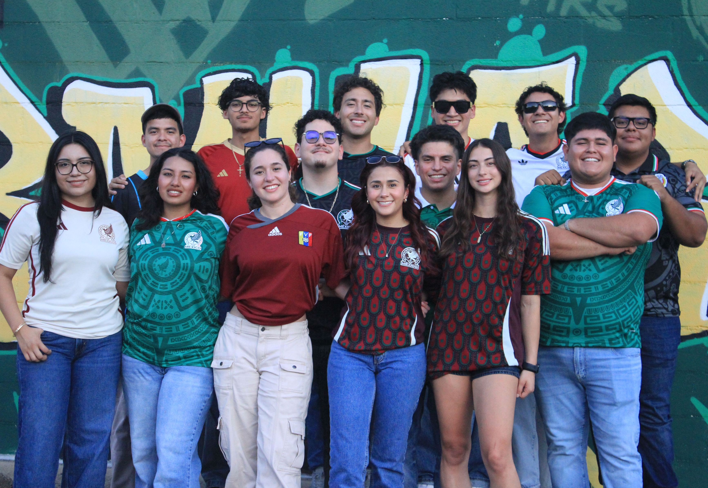

Society of Hispanic Professional Engineers
Building community. Creating opportunities. Growing together.
Our Story
The Society of Hispanic Professional Engineers at Baylor University (SHPE Baylor) is dedicated to building a strong community of students passionate about STEM. Established in 2024, our chapter is part of the national SHPE network, which serves to empower the Hispanic community to realize its fullest potential and impact the world through STEM awareness, access, support, and development.
At Baylor, we bring students together through professional workshops, cultural events, community service, and social activities. Our goal is to create familia — a supportive environment where members can grow academically, professionally, and personally.

Our Purpose
To foster a supportive community that empowers students to succeed academically, develop professionally, embrace their culture, serve their community, and build meaningful connections within STEM.
What We Value
Supporting one another through collaboration, resources, and opportunities that encourage academic success.
Preparing members for their careers through workshops, networking, mentorship, and professional opportunities.
Creating a welcoming familia where members can celebrate culture, form friendships, and feel connected.
Encouraging members to become leaders who serve Baylor and make a positive impact in the communities around them.
Find Your Familia
Whether you're looking for academic support, career opportunities, community, or simply a place to belong, Baylor SHPE welcomes students interested in STEM and professional growth.
Get Involved